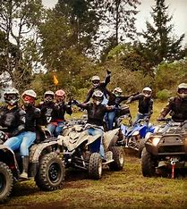

En este lugar puedes encontrar muchas de nuestras comidas Tipicas de El Salvador

Puedes encontrar comida tipicas como:
- Nuegados
- Papas Fritas
- Elotes Locos
- Enchiladas
- Pastelitos
- Torrejas
- Empanadas
De igual manera Puedes Encontrar atoles como:
- Atol de Elote
- Atol Chucho
- Atol de semilla de Marañon
- Atol de Mani
- Atol de Poleada
De igual manera puedes encontrar muchas diversiones o entrenimientos para pasarla increible
